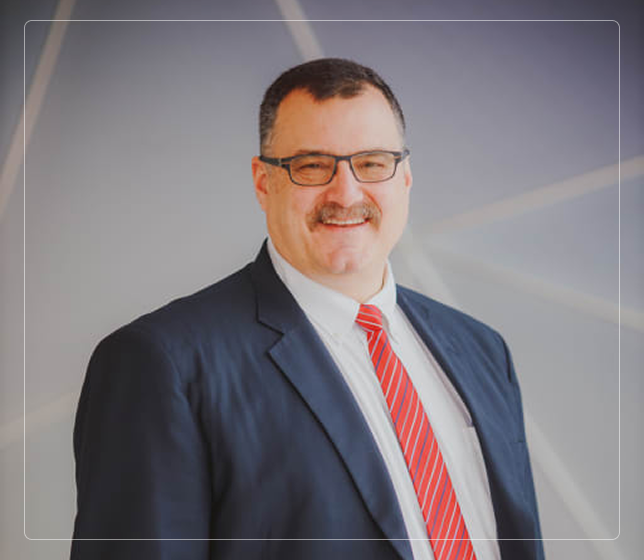

The current superintendent of American International School of Guangzhou (AISG), Kevin Baker plays a critical role in its success. Striving to put students first, both him and faculty strive to present opportunities to both better themselves in and out of school. Constant meetings with companies have led to potential internships for students, leading to learning of current standards in the industry. He constantly strives to provide the very best for his students, faculty and school. However, his role as superintendent is not the ruling aspect of his life.
With a focus on family, Kevin strives to be the best father to his four children and husband to his incredible wife. Traveling to and from the United States during vacations to spend as much time with all of them. During Summer, the importance of golf skyrockets as he attempts to hit the course as much as possible. Spending time with his sons, he continues to stress the importance of bonding, through his actions, throughout the round. While being outdoors, Bogie the Golden Doodle, takes supreme advantage of this and enjoys his time with Kevin as well. Even though living the good life is a highlight for him, it is not the end goal.
Upon retiring from his current position as superintendent at AISG, Kevin aspires to open his own consulting business. This will continue to take him internationally, but with a different role. He hopes to utilize his over 30 years of experience in the education field to help and provide support to other schools. Helping others has always played a large role in Kevins life and is always appreciated in all the lives he has touched throughout his journey.